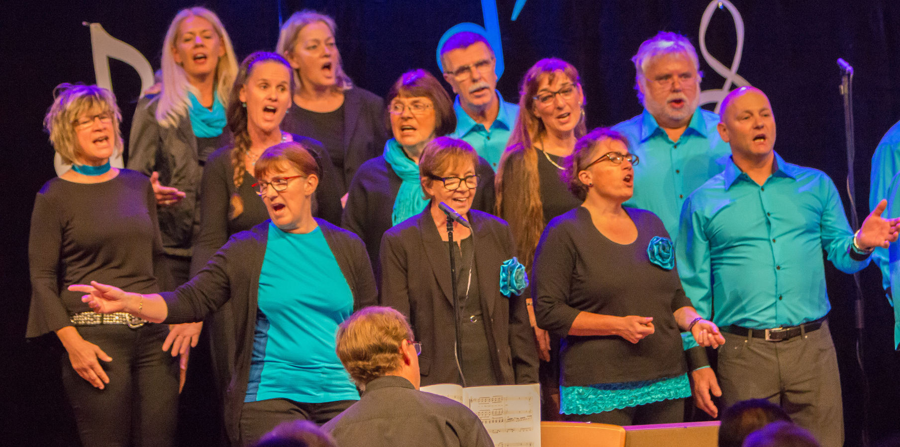
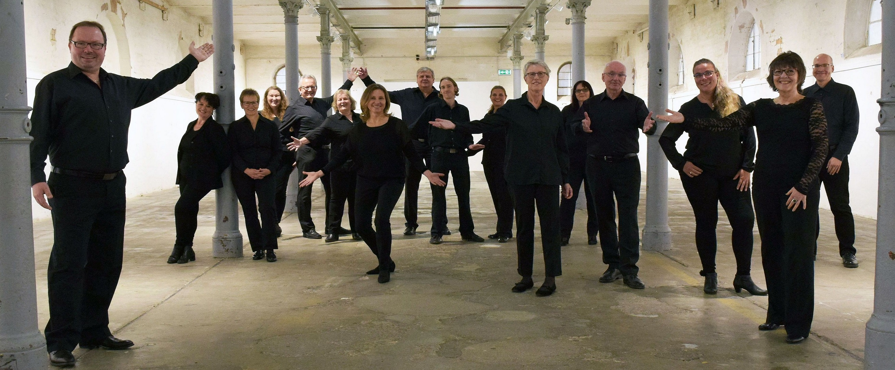
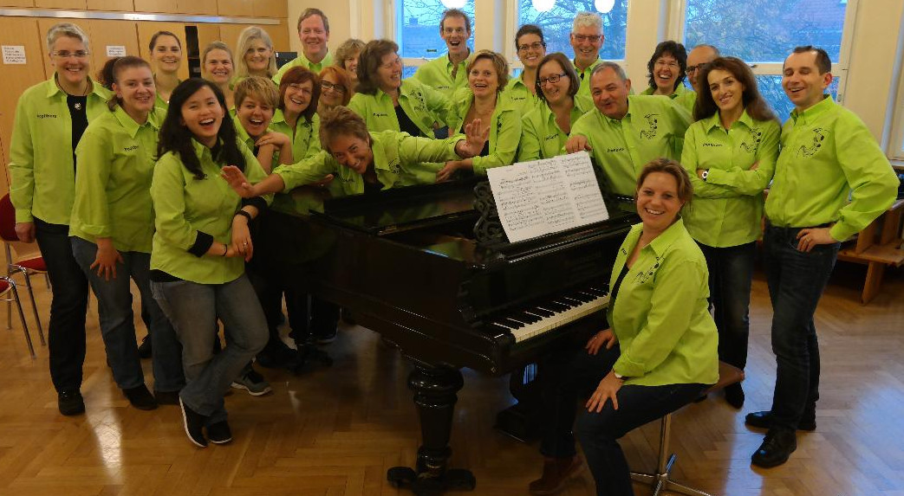
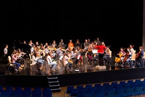
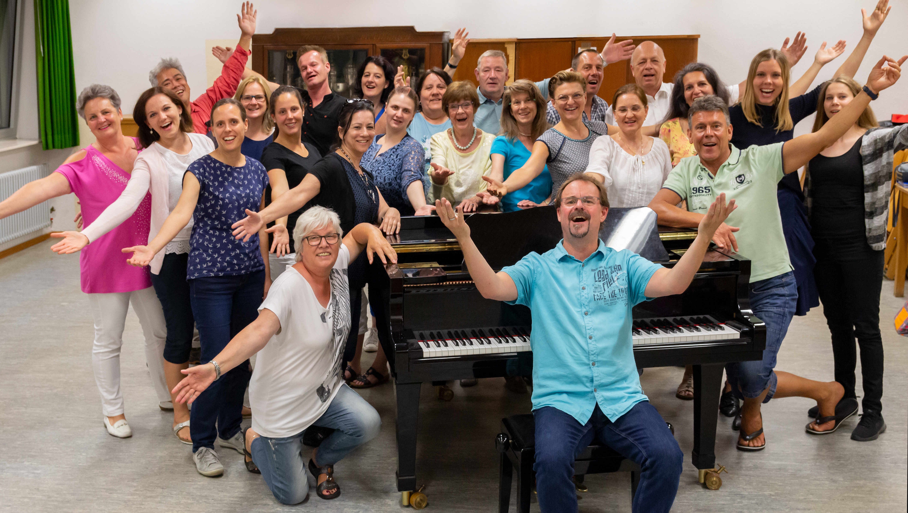

Die Teilnehmer wer macht mit
Gesangverein Eintracht Poppenweiler 1862 e.v.
Singen macht Spaß, singen tut gut…
Mit einem abwechslungsreichen Programm sind die “PoppTones” bei Ludwigsburg klingt! dabei. Wir singen für euch unter anderem Titel aus dem letzten “Friends”-Konzert aber auch neue Lieder welche ihr bei unserem kommenden “Lieder einer Stadt”-Konzert im Oktober hören könnt.

Lust auf mehr? Dann schnell zu den Chören der Eintracht Poppenweiler. Egal ob musikalische Früherziehung ab 18 Monaten, Kinder- Jugend- oder gemischter Chor – wir bieten für jeden den passenden Rahmen. Oder du denkst du bist zu alt zum Singen? Dann bist du in unserem SMS-Chor ab 65 Jahren genau richtig. In allen Chören erwartet dich eine breit gefächerte Auswahl an Liedern verschiedener Genres und Sprachen
– TRAU DICH – KOMM VORBEI!
Mehr unter www.singen-in-poppenweiler.de
TonArt Ludwigsburg e.V.
Unter dem Titel “Liebling, mein Herz lässt dich grüßen” präsentiert TonArt Ludwigsburg e.V. eine Auswahl an Stücken der Comedian Harmonists.

TonArt Ludwigsburg e.V. wurde 1994 gegründet und ist Mitglied der Chorgemeinschaft Kai Müller unter der Leitung von Kai Müller. Im Februar 2019 feierte der Chor sein 25jähriges Bestehen mit einer festlichen Veranstaltung im Forum am Schlosspark Ludwigsburg. Bewusst hebt sich der Verein von traditionellen Chorkonzepten ab. Die Chorliteratur umfasst alle Bereiche - vom Madrigal bis zum Musical.
Mehr unter tonart.kai-mueller-choere.de
Die Poplibets - der junge Chor
Unser Chorname beschreibt unseren Chor sehr treffend. Zum einen setzt er sich aus der Musikrichtung Pop und zum anderen aus dem Begriff Quadlibet zusammen. „Ein Quodlibet ist ein Musikstück in dem ursprünglich voneinander unabhängige Melodien zu einem gemeinsamen Musikstück kombiniert werden. Im Gegensatz zum Potpourri oder Medley, werden die Melodien nicht nacheinander sondern gleichzeitig und teilweise auch mehrstimmig gesungen. Die mit absichtlich unzusammenhängende Aneinanderreihung soll eine spaßhafte Wirkung hervorbringen.“ Als Popmusik wird Musik bezeichnet, die vorwiegend seit den 1950er Jahren aus dem Rock´n´Roll, der Beatmusik dem Jazz und dem Folk entstanden ist.“ Nun hat die damalige und jetzige Chorleiterin Sabine Wieland die zwei Begriffe zusammen geführt und ihrem Chor diesen Namen gegeben.

Wir haben viel Spaß vor, während und nach unseren Chorprobem und beim Singen und bedienen dabei ein breites Repertoire an Musikstücken, die wir singen: Pop, Rock, Musical, Klassik, Gospel, Kirchenmusik, Weltmusik, Weihnachtsmusik, Musik aus aller Welt, um nur einige Genres hervorzuheben.
Bei Ludwigsburg klingt! werden wir Filmhits zum Besten geben, lassen Sie sich von unserem breiten Repertoire überraschen.
Mehr unter www.poplibets-osseil.de
Freie Waldorfschule Ludwigsburg
“Musikprojekt” bedeutet an der Freien Waldorfschule Ludwigsburg, dass jeder einzelne Schüler von Klasse 5-11 mit seinem Instrument in einem klassenübergreifenden Ensemble spielt.

Bei Ludwigsburg klingt! nehmen die Gruppen der Klassen 6-8 teil: Blockflöten, Gitarren, Holzbläser, Blechbläser, Streichorchester. Diese werden am 20.6.20 an verschiedenen Orten zu hören sein.
Mehr unter www.waldorfschule-ludwigsburg.de
Sunlights
Die Sunlights wurden 2007 als junger Chor unter dem Dach des Gesangvereins Liederkranz e.V. Neckarweihingen gegründet und haben inzwischen 25 aktive Mitglieder.

Wir möchten unsere Gäste nicht nur stimmlich begeistern, sondern untermalen unseren Gesang stets mit Gesten und kleinen Choreografien. Zu unserem Repertoire gehören neben Pop- und Rocksongs auch Musical-Hits, Spirituals, Evergreens und Country- und Western-Songs.
Bei Ludwigsburg klingt! werden wir mit aktuellen Pop-/Rocksongs als auch Evergreens auftreten.
Sunlights - Durch Zeit und Raum - ein Video auf Youtube.
Mehr unter liederkranz-neckarweihingen.de/sunlights/